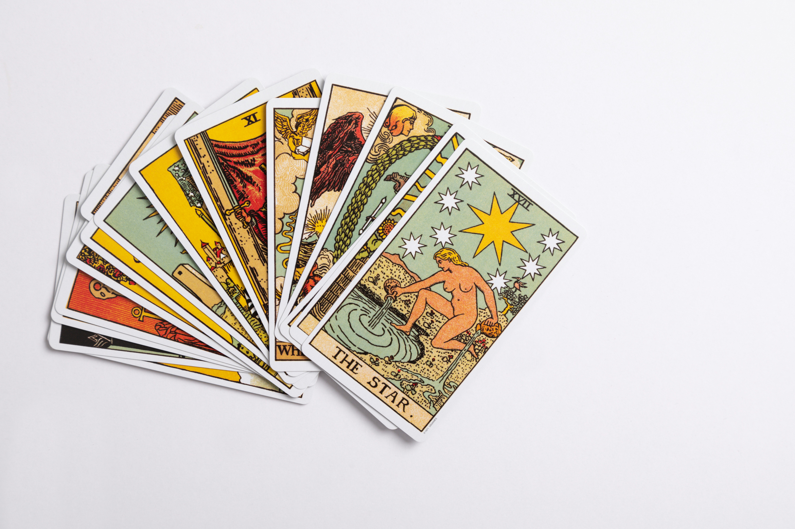
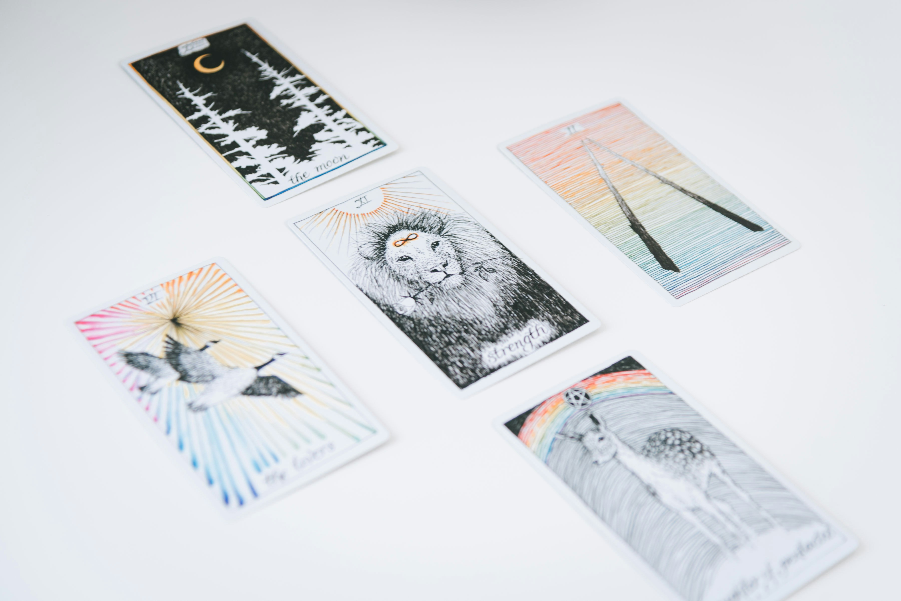
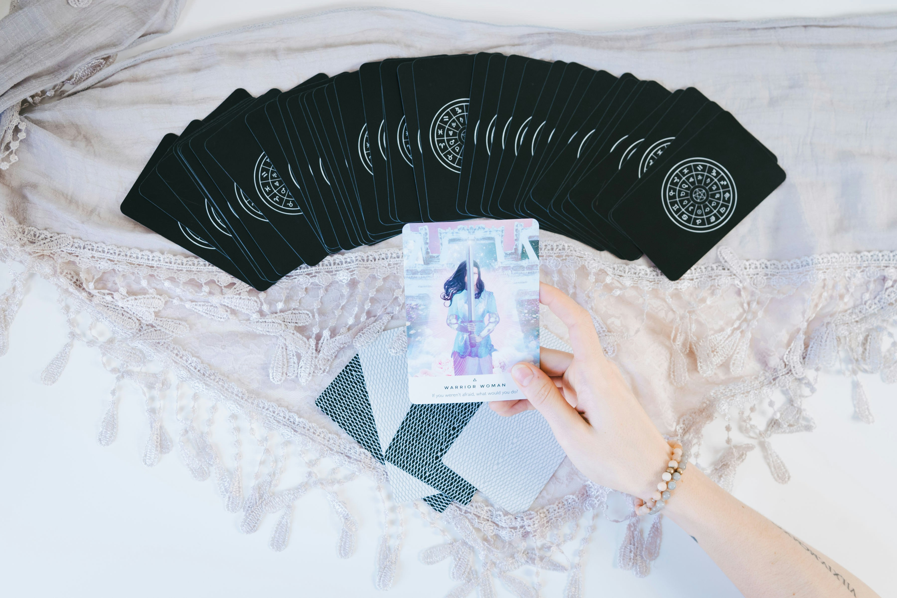
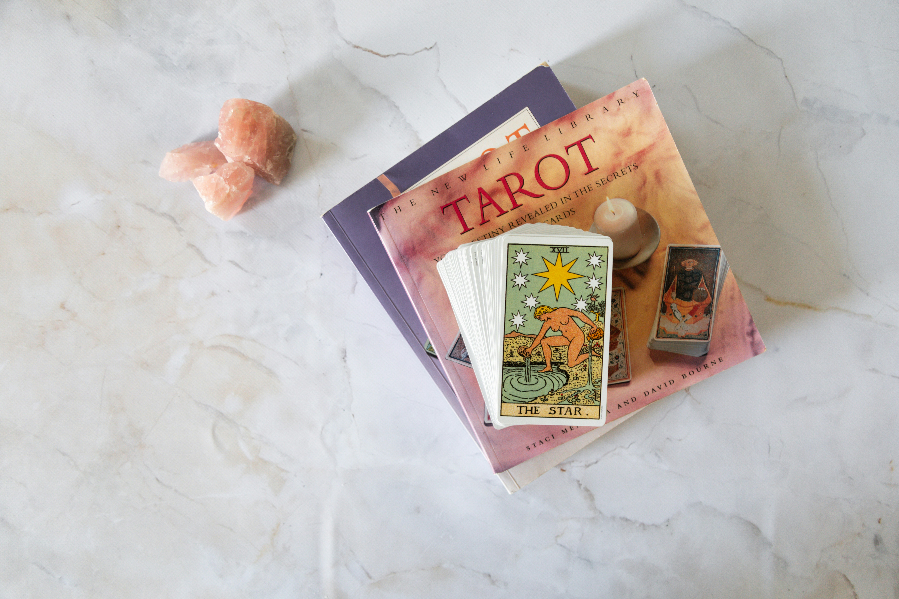
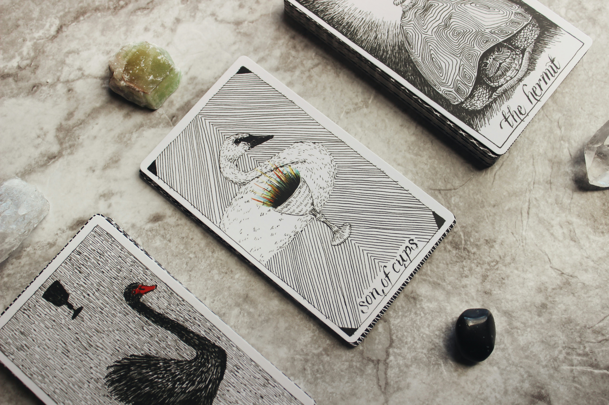
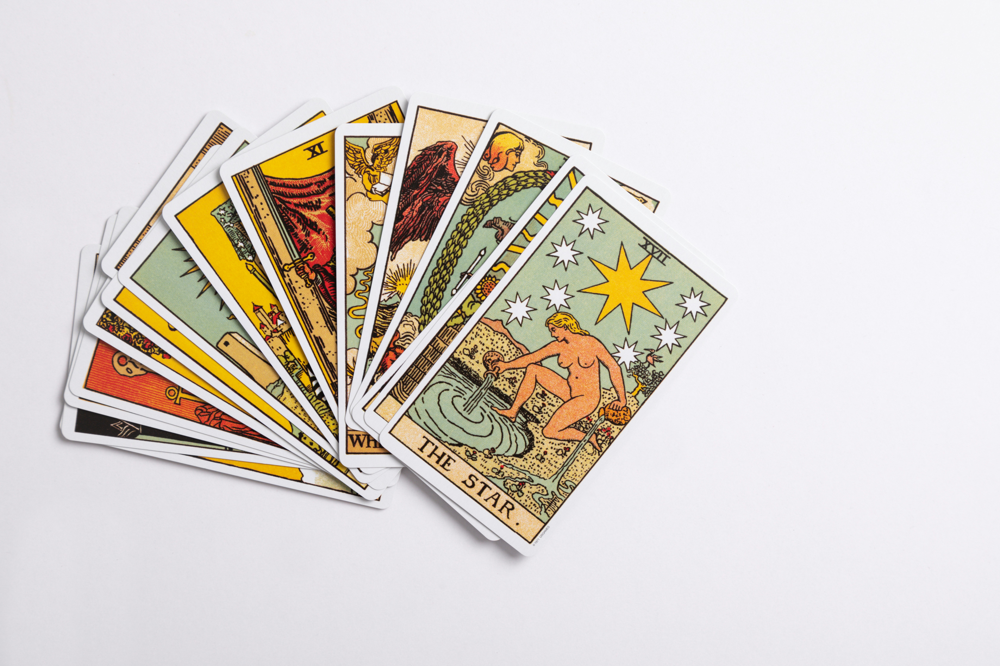
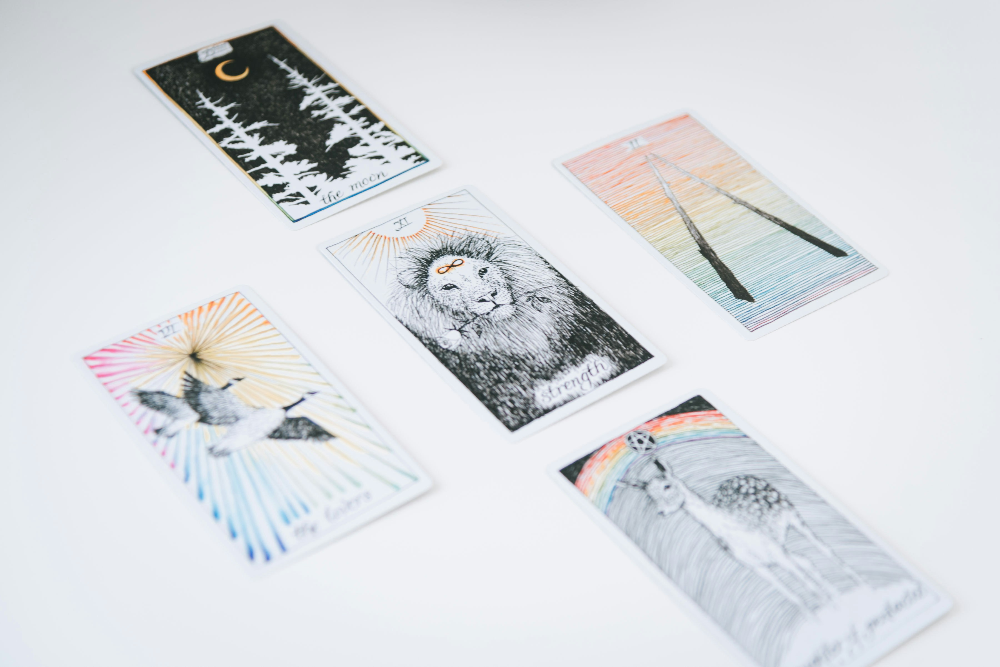
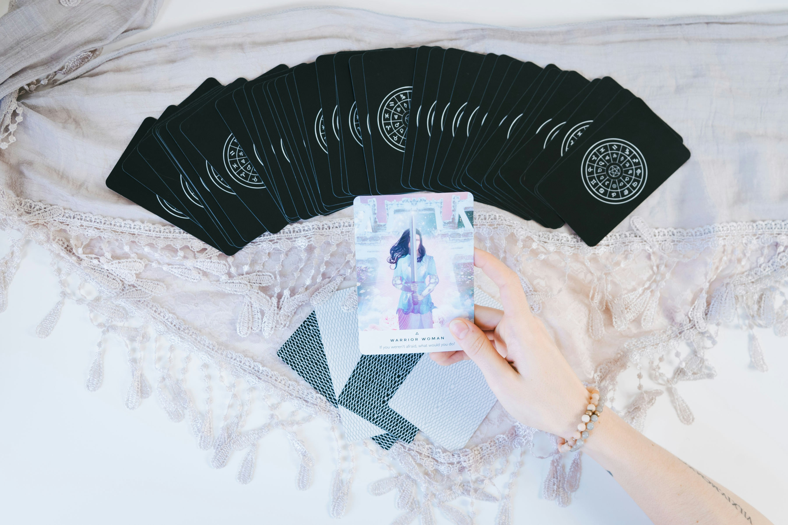
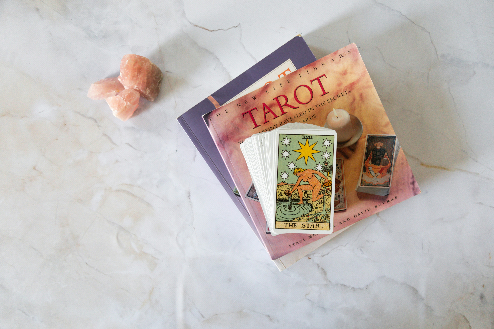
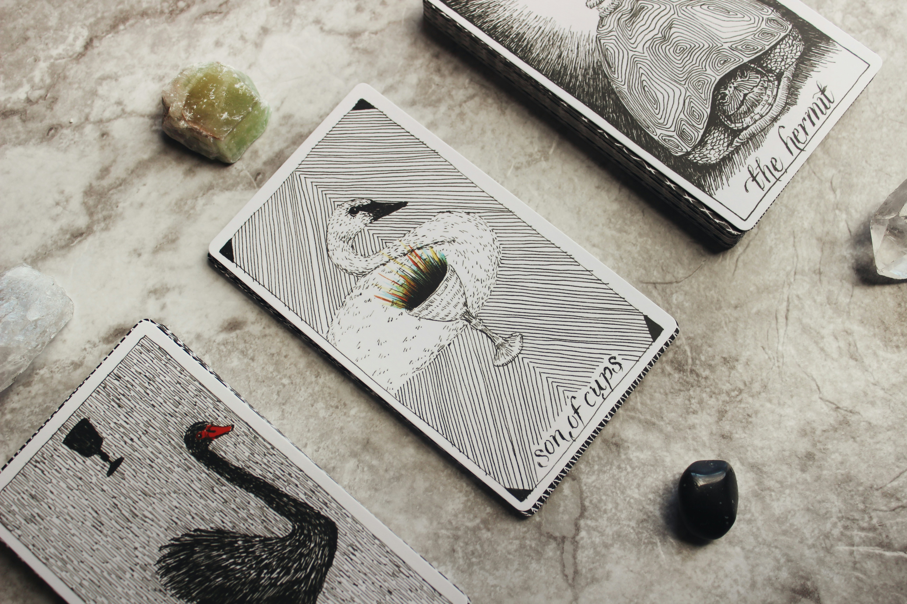

私とタロットカード
The Tarot and I
-
- タロットカードカードとの出会い
-
自分の内面を深く探求したい
という衝動に駆られ、
タロットカードを本格的に学び始めた。
各カードの象徴とその奥深い意味を
一つ一つ紐解きながら、
神秘的な世界に魅了されていく。
タロットが持つ独特の語り口に、
心が次第に引き寄せられていく。
-
- 日運との対話
-
毎朝、日運を占うことでタロット
との絆を深めていった。
カードが描く一日一日の物語は、
日常に新たな視点をもたらしてくれる。
タロットは静かに語りかける友のように、
日々の暮らしの中で存在感を増していく。
-
- 他者への啓示
-
友人や知人の学業、恋愛、仕事の相談に
タロットを使い始めた。
カードが紡ぎ出すメッセージは、
彼らの迷いや不安を解きほぐし、 新たな光をもたらしてくれる。
タロットの魔法を通じて、
人々に希望と導きを提供することに
喜びを感じている。
好きなタロットカード
Beloved Tarot Cards

復古韋特タロットカードは、
そのクラシックなデザインと豊かな象徴性で、
多くの人々に愛されている。
鮮やかな色彩と詳細な描写が、
カード一枚一枚に深い物語を宿している。
伝統と歴史が織り成すこのデッキは、
初めてタロットを手にする人にも親しみやすい。
霊眼タロットカードカードは、
その名の通り、霊的な洞察力を高める力を持つ。
神秘的な図案と鮮やかな色彩が、
直感を研ぎ澄まし、深い瞑想の世界へと誘う。
心の奥底に眠る真実を引き出す力がある。

異教徒タロットカードは、
異教の神秘と魔法を感じさせる
独特のデザインが特徴だ。
エキゾチックな図案と深淵なシンボリズムが、
見る者を異世界へと連れ去る。
日常の枠を超えた新たな視点を提供してくれる。
お気に入りの大アルカナ
Cherished Major Arcana Cards
The Fool
愚者のカードは、
無限の可能性を象徴する。
崖の端に立ち、
旅の始まりを告げる姿は、
未知への冒険と新たな始まりを意味する。
彼の無邪気な表情と軽やかな足取りは、
心の奥底に眠る自由と無垢を呼び覚ます。
常識や固定観念に縛られず、
直感と好奇心に従って行動する。
私たちにリスクを恐れず、
新しい道を切り開く勇気を教えてくれる。
愚者は、
人生のどの瞬間にも潜む可能性を信じ、
自分の内なる声に耳を傾けることの
大切さを示している。
The Hanged Man
吊るされた男は、
逆さまの視点から
見ることで得られる洞察を象徴する。
彼の静かな表情と安らかな姿勢は、
自己犠牲と内省の象徴である。
このカードは、
困難な状況に直面したときに、
状況を逆転させて
新たな視点を得ることの重要性を
教えてくれる。
吊るされた男は、
外界の喧騒から離れ、
自分自身と向き合う時間を持つことの
大切さを示している。
彼の姿は、
内なる成長と精神的な目覚めを促す、
深い瞑想の象徴である。
The Moon
月のカードは、
潜在意識と夢の世界を象徴する。
夜空に浮かぶ月の光は、
私たちの深層心理に光を当てる。
月のカードは、
不安や幻想、隠された真実を
映し出す鏡のような存在である。
彼女の淡い光は、
心の奥底に眠る感情や欲望を呼び覚まし、
私たちに自己探求の旅を促す。
月は、直感と感性を研ぎ澄まし、
見えないものを感じ取る力を高めてくれる。
彼女の静かな輝きは、
暗闇の中で道を見つけるための
内なる光を象徴している。

 








